<!DOCTYPE html>
<html lang="en">
<head>
</html>
  <meta charset="UTF-8">
  <meta name="viewport" content="width=device-width, initial-scale=1.0">
  <title>Welcome Back Home, Uqi</title>
  <link rel="preconnect" href="https://fonts.googleapis.com">
  <link rel="preconnect" href="https://fonts.gstatic.com" crossorigin>
  <link href="https://fonts.googleapis.com/css2?family=Anton&family=Inter:wght@400;500;600;700;800&display=swap" rel="stylesheet">
  <link rel="stylesheet" href="main.css">
</head>
<body>
  <video
    class="music-backdrop"
    id="musicVideo"
    src="sewerperson%20-%20i%20live%20in%20nitemare%20town%20%5BLyrics%20%20AMV%5D.mp4"
    preload="metadata"
    playsinline
    loop
  ></video>
  <div class="noise"></div>
  <div class="toast-stack" id="toastStack" aria-live="polite"></div>

  <section class="intro-overlay" id="introOverlay" aria-label="Intro sequence">
    <div class="intro-frame">
      <div class="intro-logo-stage" aria-hidden="true">
        
        
      </div>
      <h2>Welcome Back Home</h2>
      <p class="intro-copy">Sign your name to enter Uqi's Archives</p>
      <label class="intro-input-label" for="visitorNameInput">Let's get to know each other</label>
      <div class="intro-input-row">
        <input id="visitorNameInput" type="text" autocomplete="name" maxlength="32" placeholder="Your name">
        <button class="mini-action" id="introEnterButton" type="button">Enter</button>
      </div>
    </div>
  </section>

  <header class="topbar">
    <a class="brand" href="#home" aria-label="Go to home">
      <span class="brand-mark">UQI</span>
      <span>Syauqi Abid</span>
    </a>

    <nav class="nav-links" aria-label="Primary navigation">
      <a href="#bio">Bio</a>
      <a href="#hobbies">Hobby</a>
      <a href="#social">Social</a>
      <a href="#track">Track</a>
    </nav>

    <div class="topbar-actions">
      <button class="audio-toggle" id="audioToggle" type="button" aria-label="Mute music">Mute</button>
      <button class="theme-toggle" id="themeToggle" type="button" aria-label="Switch to light mode">
        <span class="theme-icon" aria-hidden="true">➟</span>
        <span id="themeLabel">Dark</span>
      </button>
    </div>
  </header>

  <main id="home">
    <section class="hero">
      <div class="hero-copy">
        <p class="kicker">Indonesia / Pekanbaru / 2005</p>
        <h1>Welcome Back Home, Uqi</h1>
        <p class="hero-lead">
          Web programmer, underground artist, multimedia maker, and a person still building meaning from a difficult season.
        </p>
        <div class="visitor-counter" aria-label="Visitor tracking">
          <span><span class="eye-symbol" aria-hidden="true">&#128065;</span> <strong id="viewCount">0</strong> views</span>
          <span id="visitorNames">Visitors: Guest</span>
        </div>
        <div class="live-clock-card reveal-card" aria-label="Live clock and date">
          <span class="clock-label">Live System Time</span>
          <strong id="liveTime">00:00:00</strong>
          <small id="liveDate">Thursday, 08 May 2026</small>
        </div>
        <div class="status-console status-online" aria-live="polite">
          <span class="status-dot" id="statusDot" aria-hidden="true"></span>
          <span>Status</span>
          <strong id="statusText">Online</strong>
        </div>

        <div class="hero-actions" aria-label="Main actions">
          <a class="primary-action" href="#bio">Read Profile</a>
          <a class="ghost-action" href="#social">My Social</a>
        </div>
      </div>

      <article class="identity-card" aria-label="Uqi profile card">
        <div class="portrait-wrap">
          
          <span class="portrait-tag">USER FILE</span>
        </div>
        <div class="card-copy">
          <p class="card-label">Codename</p>
          <h2>UqiOnly</h2>
          <p>
            A creative operator who moves between code, sound, video, images, editing, and quiet self-reconstruction.
          </p>
        </div>
      </article>
    </section>

    <section class="dashboard" aria-label="Quick profile facts">
      <article class="stat-panel">
        <span class="stat-value" id="ageValue">20</span>
        <span class="stat-label">Years Old</span>
      </article>
      <article class="stat-panel">
        <span class="stat-value">PKU</span>
        <span class="stat-label">Pekanbaru, Indonesia</span>
      </article>
      <article class="stat-panel">
        <span class="stat-value">Web</span>
        <span class="stat-label">Programming Focus</span>
      </article>
      <article class="stat-panel">
        <span class="stat-value">Multimedia</span>
        <span class="stat-label">Multimedia Artist</span>
      </article>
    </section>

    <section class="system-grid" aria-label="Live system and attention dashboard">
      <article class="panel ai-panel reveal-card">
        <div class="section-heading">
          <p class="kicker">Affirmations</p>
          <h2>Focus Signal</h2>
        </div>
        <p id="aiAffirmation">
          You are not required to solve the whole future tonight. Hold the line, polish one skill, and let the next minute become useful.
        </p>
        <button class="mini-action" id="affirmationButton" type="button">New Signal</button>
      </article>

      <article class="panel device-panel reveal-card">
        <div class="section-heading">
          <p class="kicker">Device Pulse</p>
          <h2 id="deviceName">Detecting Device</h2>
        </div>
        <div class="device-grid">
          <div class="device-tile">
            <span>Battery</span>
            <strong id="batteryLevel">Checking</strong>
            <small id="batteryState">Waiting for device permission</small>
          </div>
          <div class="device-tile">
            <span>WiFi / Network</span>
            <strong id="networkStatus">Checking</strong>
            <small id="networkDetail">Reading browser connection signal</small>
          </div>
          </div>
        </div>
      </article>
    </section>

    <section class="panel detail-section" aria-label="Personal physical details">
      <div class="section-heading split-heading">
        <div>
          <p class="kicker">Personal Cardboard</p>
          <h2>Identity Specs</h2>
        </div>
        <span class="section-stamp">Verified File</span>
      </div>

      <div class="detail-grid">
        <article class="detail-card">
          <span>Gender</span>
          <strong>Male</strong>
        </article>
        <article class="detail-card">
          <span>Height</span>
          <strong>178 cm</strong>
        </article>
        <article class="detail-card">
          <span>Weight</span>
          <strong>46 kg</strong>
        </article>
        <article class="detail-card">
          <span>Accents / Dialects</span>
          <strong>British (Brummie)</strong>
        </article>
      </div>
    </section>

    <section class="content-grid" id="bio">
      <article class="panel bio-panel">
        <div class="section-heading">
          <p class="kicker">Biography Archive</p>
          <h2>About Syauqi Abid</h2>
        </div>
        <p>
          My name is Syauqi Abid, but most people simply call me Uqi. I was born on September 17, 2005, and I live in Pekanbaru, Indonesia, a city that has become the background of my growth, my experiments, my solitude, and my creative identity. I am a web programmer with a strong interest in building digital experiences that feel personal, useful, and visually expressive. For me, programming is not only about writing code. It is a way to turn scattered thoughts into structure, to transform emotion into interfaces, and to prove that an idea can survive when it is treated with patience.
        </p>
        <p>
          Beyond programming, I also see myself as an underground artist and multimedia artist. I work across music production, video, photography, editing, visual storytelling, and concept development. I am drawn to raw atmospheres, honest emotions, dark details, sharp contrast, and the kind of art that does not try to look perfect just to be accepted. My creative direction often comes from personal experience: silence, loss, survival, late-night thinking, broken routines, and the need to keep moving even when life feels heavy.
        </p>
        <p>
          At this moment in my life, I am someone with experience in the fields I care about, but I am also living through a very damaged chapter. I lost what felt like my final love, and I now walk through many days alone, without letting too many people enter my life. Many people have stepped away from me, but I do not believe that the choices and pain of my current life will decide my entire future. I believe this process is shaping me. Every difficult day, every quiet night, every disappointment, and every unfinished dream becomes part of the form I am slowly becoming.
        </p>
        <p>
          I do not want my story to be defined only by sadness. I want it to show resilience, discipline, taste, and the courage to keep creating while carrying wounds that other people may never fully understand. I am still learning how to turn loneliness into focus, heartbreak into clarity, and pressure into work that has a real signature. My future is not finished. I am still designing it, one project, one sound, one frame, and one line of code at a time.
        </p>
      </article>

      <aside class="panel intel-panel" aria-label="Personal intel">
        <div class="section-heading">
          <p class="kicker">Operator Intel</p>
          <h2>Profile Notes</h2>
        </div>
        <ul class="intel-list">
          <li><span>Name</span><strong>Syauqi Abid</strong></li>
          <li><span>Alias</span><strong>Uqi</strong></li>
          <li><span>Birthdate</span><strong>17 September 2005</strong></li>
          <li><span>Location</span><strong>Pekanbaru, Indonesia</strong></li>
          <li><span>Role</span><strong>Web Programmer</strong></li>
          <li><span>Artist Type</span><strong>Underground / Sonder</strong></li>
        </ul>
        <div class="mental-logo-card" aria-label="Uqi Mental logo">
          
          
        </div>
      </aside>
    </section>

    <section class="writing-stage" id="writing" aria-label="His Writing">
      <div class="widget-column widget-left" aria-label="Left visual widgets">
        <article class="photo-widget">
          
          <div>
            <span>// L-01</span>
            <strong>Still Signal</strong>
          </div>
        </article>
        <article class="photo-widget compact-widget">
          
          <div>
            <span>XX-05</span>
            <strong>Inner Static</strong>
          </div>
        </article>
      </div>

      <article class="panel writing-panel">
        <div class="section-heading">
          <p class="kicker">His Writing</p>
          <h2>Private Dormitory</h2>
        </div>
        <p>
          At this point Uqi was elucidated in a momentary lapse of soul-crushing fear. He felt the familiar sensation run down his chest and into his stomach, his guts twisting and turning like they wanted to escape from the claustrophobic confines of his meager body. Her bold eyes undressed him down with a strange conviction, as if to convey that she had pierced the mask that Uqi adorned at every waking moment. As if she was the only one who had managed to venture far enough to discover whatever was hidden behind every corner of Uqi's private dormitory, finding objects of which their existence were only known by Uqi himself.
        </p>
        <p>
          At this very moment, it all came crashing down. The curtains were unveiled through a single gaze by none other than <strong>her</strong>. April diverted her gaze, yet the sensation lingered. He was crushed, defeated, devastatingly heart-broken. The pipes had burst and out gushed the stream. He was truly humiliated, all the effort he took in arduously concealing the only part of him he did not want the world to see, now utterly dismantled by a single look from a woman he had only just met.
        </p>
      </article>

      <div class="widget-column widget-right" aria-label="Right visual widgets">
        <article class="photo-widget compact-widget">
          
          <div>
            <span>R-07</span>
            <strong>Broken Bloom</strong>
          </div>
        </article>
        <article class="photo-widget">
          
          <div>
            <span>SYNC</span>
            <strong>Nocturne Frame</strong>
          </div>
        </article>
        <article class="photo-widget slim-widget">
          
          <div>
            <span>END</span>
            <strong>Quiet Proof</strong>
          </div>
        </article>
      </div>
    </section>

    <section class="panel collaboration-section reveal-card" id="collaboration">
      <div class="section-heading split-heading">
        <div>
          <p class="kicker">Collaboration Offer</p>
          <h2>Work With Uqi</h2>
        </div>
        <span class="section-stamp">Open Signal</span>
      </div>
      <p>
        I am open to focused collaboration in web interfaces, multimedia direction, music visuals, editing, photography, videography, and underground-style digital identity. If your project needs a sharp visual system, emotional atmosphere, or a personal creative signature, reach me through Instagram and send a clear brief, timeline, reference, and expected output.
      </p>
      <a class="primary-action collab-action" href="https://www.instagram.com/uqionly?igsh=cXNpNzUwMHFueHM2" target="_blank" rel="noopener noreferrer">DM Instagram</a>
    </section>

    <section class="panel hobbies-section" id="hobbies">
      <div class="section-heading split-heading">
        <div>
          <p class="kicker">Skill Deck</p>
          <h2>Hobby</h2>
        </div>
        <div class="filter-controls" aria-label="Hobby filters">
          <button class="filter-btn active" type="button" data-filter="all">All</button>
          <button class="filter-btn" type="button" data-filter="digital">Digital</button>
          <button class="filter-btn" type="button" data-filter="visual">Visual</button>
          <button class="filter-btn" type="button" data-filter="sound">Sound</button>
        </div>
      </div>

      <div class="hobby-grid">
        <article class="hobby-card" data-type="digital">
          <span class="hobby-code">01</span>
          <h3>Web Programming</h3>
          <p>Designing and coding websites with personality, clean structure, responsive layouts, and interactive details.</p>
        </article>
        <article class="hobby-card" data-type="sound">
          <span class="hobby-code">02</span>
          <h3>Music Production</h3>
          <p>Building moods through melodies, samples, drums, ambience, and underground textures that carry emotional weight.</p>
        </article>
        <article class="hobby-card" data-type="visual">
          <span class="hobby-code">03</span>
          <h3>Videography</h3>
          <p>Capturing scenes, motion, light, and pacing to turn simple moments into cinematic visual records.</p>
        </article>
        <article class="hobby-card" data-type="visual">
          <span class="hobby-code">04</span>
          <h3>Photography</h3>
          <p>Exploring portraits, street details, shadows, colors, and compositions that feel quiet but memorable.</p>
        </article>
        <article class="hobby-card" data-type="digital">
          <span class="hobby-code">05</span>
          <h3>Editing</h3>
          <p>Refining images, videos, sound, and timing until every piece feels intentional and emotionally direct.</p>
        </article>
        <article class="hobby-card" data-type="digital">
          <span class="hobby-code">06</span>
          <h3>UI Concepting</h3>
          <p>Creating bold interface ideas inspired by games, music visuals, tactical screens, and cyber-styled layouts.</p>
        </article>
        <article class="hobby-card" data-type="visual">
          <span class="hobby-code">07</span>
          <h3>Storyboarding</h3>
          <p>Planning scenes, camera mood, transitions, and visual flow before turning an idea into a finished piece.</p>
        </article>
        <article class="hobby-card" data-type="sound">
          <span class="hobby-code">08</span>
          <h3>Sound Design</h3>
          <p>Shaping atmospheres, impacts, glitches, and background textures for music, video, and immersive web work.</p>
        </article>
      </div>
    </section>

    <section class="panel social-section" id="social">
      <div class="section-heading split-heading">
        <div>
          <p class="kicker">Contact Board</p>
          <h2>My Social</h2>
        </div>
        <span class="section-stamp">Platforms</span>
      </div>

      <div class="social-grid">
        <article class="social-card discord-card">
          <span class="social-icon">DC</span>
          <div>
            <h3>Discord</h3>
            <p>uqionly</p>
          </div>
          <button class="social-copy" type="button" data-copy="uqionly">Copy</button>
        </article>

        <a class="social-card youtube-card" href="https://youtube.com/@uqionly?si=jQ68UDAXfQ5yFM8Z" target="_blank" rel="noopener noreferrer">
          <span class="social-icon">YT</span>
          <div>
            <h3>Youtube</h3>
            <p>uqionly</p>
          </div>
          <strong>Open</strong>
        </a>

        <a class="social-card instagram-card" href="https://www.instagram.com/uqionly?igsh=cXNpNzUwMHFueHM2" target="_blank" rel="noopener noreferrer">
          <span class="social-icon">IG</span>
          <div>
            <h3>Instagram</h3>
            <p>@uqionly</p>
          </div>
          <strong>Open</strong>
        </a>

        <a class="social-card github-card" href="https://github.com/uqionly" target="_blank" rel="noopener noreferrer">
          <span class="social-icon">GH</span>
          <div>
            <h3>Github</h3>
            <p>uqionly</p>
          </div>
          <strong>Open</strong>
        </a>

        <a class="social-card steam-card" href="https://steamcommunity.com/profiles/76561198774246739/" target="_blank" rel="noopener noreferrer">
          <span class="social-icon">ST</span>
          <div>
            <h3>Steam</h3>
            <p>uqi</p>
          </div>
          <strong>Open</strong>
        </a>

        <a class="social-card spotify-card" href="https://open.spotify.com/user/31hbjt3r7w7c4axa75labtrbkla4?si=lAfq91PyQ5OrVv1dON5u-A" target="_blank" rel="noopener noreferrer">
          <span class="social-icon">SP</span>
          <div>
            <h3>Spotify</h3>
            <p>uqionly</p>
          </div>
          <strong>Open</strong>
        </a>
      </div>
    </section>

    <section class="content-grid lower-grid" id="track">
      <article class="panel music-panel">
        <div class="section-heading">
          <p class="kicker">Favorite Song</p>
          <h2>Personal Track</h2>
        </div>
        <p>
          A favorite song can work like a checkpoint and reminds me of my chapter now.
        </p>
        <div class="now-playing" id="nowPlaying" hidden>
          Now Playing <strong>Sewerperson - I live in nitemare town</strong>
        </div>
        <div class="visualizer" id="visualizer" aria-label="Audio visualizer">
          <span></span>
          <span></span>
          <span></span>
          <span></span>
          <span></span>
          <span></span>
          <span></span>
          <span></span>
          <span></span>
          <span></span>
          <span></span>
          <span></span>
        </div>
        <button class="play-button" id="playButton" type="button">Play Me</button>
      </article>

      <article class="panel quote-panel">
        <div class="section-heading">
          <p class="kicker">Current Resolve</p>
          <h2>Forward</h2>
        </div>
        <blockquote>
          The present may be broken, but it is still material. I can build from it.
        </blockquote>
        <div class="power-meter-list" aria-label="Animated creative focus meters">
          <div class="power-meter" data-level="92">
            <span>Code</span>
            <strong>92%</strong>
            <i></i>
          </div>
          <div class="power-meter" data-level="88">
            <span>Visual</span>
            <strong>88%</strong>
            <i></i>
          </div>
          <div class="power-meter" data-level="84">
            <span>Sound</span>
            <strong>84%</strong>
            <i></i>
          </div>
        </div>
      </article>
    </section>

  <footer class="footer">
    <p>Built for Uqi. Designed as a personal home screen for recovery, skill, and self-expression.</p>
  </footer>

  <script src="main.js"></script>
</body>
</html>
